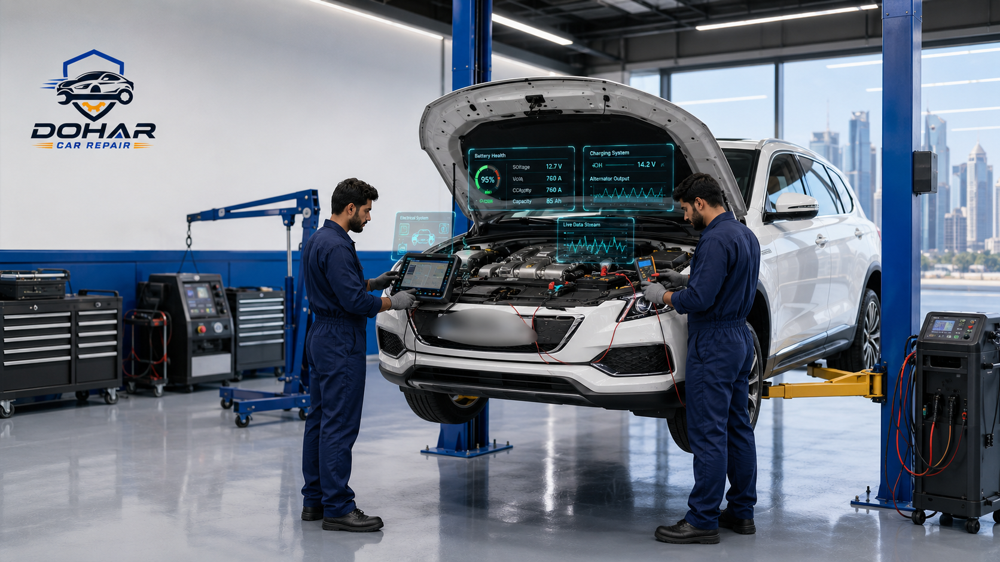
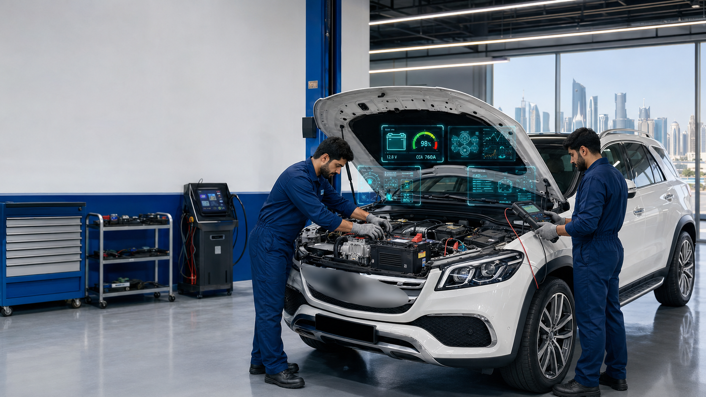

A failed battery is one of the most common reasons drivers get stranded in Doha — especially during summer, when under-hood temperatures push electrical systems to their limit. If you need reliable Car Battery Replacement Doha service, knowing how batteries fail in Qatar’s climate, what warning signs to watch for, and how a professional shop tests and fits the right unit can save you from repeated jump starts and expensive roadside delays. This guide from Dohar Car Repair covers battery testing, replacement, jump-start support, costs in QAR, and practical maintenance that extends battery life on Qatar’s roads.

Why Battery Performance Matters in Qatar Heat
Your car battery does more than start the engine. It powers the ignition system, fuel pump, electronic control modules, lights, and comfort equipment such as seats and climate blowers when the alternator alone cannot keep up. In Qatar, ambient temperatures regularly climb past 45°C, and temperatures inside a closed engine bay climb higher still. Heat accelerates chemical aging inside the battery, evaporates electrolyte in flooded designs, and stresses plastic cases and terminal seals.
Short trips around West Bay, Pearl Qatar, or downtown shopping districts keep the battery discharging more often than it recharges fully. Long idle periods with the air conditioning and entertainment system on — common while waiting in school pickup lines or mall parking — further drain capacity. When you combine heat aging with high electrical load, a battery that might last four to five years in a cooler climate can fail in two to three years in Doha.
Weak batteries also strain related systems. A battery that struggles to start forces the starter motor to work harder and creates voltage dips that confuse sensitive electronics. On vehicles with start-stop systems, which are increasingly common in newer imports sold in Qatar, a marginal battery can disable start-stop, trigger dashboard warnings, and leave you with unreliable cold-and-hot starts alike. Professional car battery testing Doha workshops use load testers and conductance meters to measure real capacity — something a simple voltage check with a household meter cannot do.
- Heat aging: High under-hood temperatures shorten plate life and speed sulfation after deep discharges
- High electrical demand: Strong AC blowers, multiple screens, and phone chargers increase average load
- Stop-and-go traffic: Frequent restarts and low-speed driving reduce alternator charging efficiency
- Parked heat soak: Cars left under direct sun for hours often face harder starts in the afternoon
Expert Tip
In Qatar, treat three years of service life — or any hard-start in summer — as a cue for professional testing. Waiting until a full dead battery Qatar emergency often means replacing the battery at the least convenient time, on a busy highway or outside a supermarket after dark.
Common Causes of Battery Failure in Doha
Not every no-start is “just an old battery.” Technicians see several failure patterns unique to Gulf driving and parking habits. Understanding them helps you prevent repeat failures after a replacement.
Heat-related capacity loss is the primary cause. Elevated temperatures increase the rate of corrosion on positive grids and dry out vented batteries. Even sealed maintenance-free batteries lose capacity as active material sheds and internal resistance rises.
Parasitic drain is another frequent issue. Aftermarket dashcams wired to constant power, poorly installed tracking devices, glove-box lights that stay on, and failing door modules can slowly empty a battery overnight. Drivers then blame the battery when the root cause is a draining circuit.
Alternator and charging faults undercharge or overcharge the battery. An undercharging system never restores a full state of charge after night driving with lights and AC. An overcharging system boils electrolyte and warps plates. Both end in early battery failure. Related vehicle systems — cooling, electrical accessories, and even poorly maintained ACs that force high blower use — are covered in our related guides on car AC repair in Doha and general car repair service in Qatar.
Corroded or loose terminals create high resistance. White or blue-green powder on posts, especially on older Japanese and Korean cars parked outdoors, can prevent enough current from reaching the starter even when the battery itself is only moderately aged.
Deep discharge events — leaving headlights on, running accessories with the engine off, or repeated jump starts without a full recharge — damage plates. After a dead battery Qatar incident, simply jump-starting and driving ten minutes is not enough; the battery needs proper charging and a load test.
- Leaving interior lights or aftermarket accessories powered overnight
- Driving only short distances for weeks without a longer highway charge cycle
- Using an undersized battery or wrong group size after a previous cheap replacement
- Ignoring battery warning lights or energy-management messages on newer cars
Warning Signs Your Car Battery Needs Replacement
Batteries rarely fail without clues. Catching the signs early lets you schedule replacement instead of calling for an emergency battery jump start Doha service in 45°C heat.
Slow or Labored Cranking
If the starter turns slowly, especially after the car has sat in the sun, the battery is struggling to deliver cold-cranking amps. In Qatar’s climate this “hot-cranking” weakness is usually more noticeable than cool-morning starts.
Clicking Sound Without Engine Start
A rapid click or a single solid click with no crank often means voltage has fallen too low to engage the starter properly. Rule out a bad starter with professional testing before buying parts.
Dim Lights and Weak Electronics at Idle
Headlights that brighten when you rev the engine, or flickering infotainment screens at idle, can indicate low battery and charging voltage. Do not confuse this with a simple bulb issue.
Battery Warning Light or Start-Stop Disabled
Many modern vehicles display a battery icon or a message that start-stop is unavailable. These warnings deserve a same-day load test, not a wait-and-see approach.
Swollen Case or Strong Sulfur Smell
A bulging battery case is a heat-damage and overcharge warning. A rotten-egg smell suggests leaking electrolyte or severe overcharging. Both require immediate inspection — continued driving can damage nearby wiring and plastics.
Age Beyond Three to Four Years
Even if the car still starts, a battery older than about three years in Qatar is statistically near end of life. Preventive replacement before a major travel day to Al Khor, Dukhan, or the airport is smarter than risking a roadside failure.

Professional Car Battery Replacement Process at Dohar Car Repair
Guessing and swapping batteries without diagnosis wastes money. Our workshop follows a structured process so you only replace what is necessary and receive a battery correctly coded and secured for your vehicle.
- Symptom interview and visual inspection
We ask when the problem occurs — morning, after shopping, after overnight parking — and inspect the battery case, hold-down bracket, cables, and terminal condition for corrosion, looseness, or wrong fitment.
- State-of-charge and load testing
Using calibrated testers, we measure open-circuit voltage, cranking performance under load, and estimated remaining capacity. This car battery testing Doha step distinguishes a weak battery from a charging-system fault.
- Charging system verification
We check alternator output and look for excessive ripple. If the alternator is undercharging or overcharging, installing a new battery alone will not solve your problem.
- Parasitic draw check when indicated
For cars that die overnight with a relatively new battery, we measure key-off current draw and isolate aftermarket accessories if needed.
- Correct battery selection
We match group size, terminal layout, cold-cranking amps, and technology (flooded, EFB, or AGM battery Qatar-spec) to the manufacturer’s requirements — especially important on start-stop vehicles.
- Safe removal, fitting, and terminal protection
We disconnect safely, clean contact surfaces, install the new battery with a secure hold-down, apply terminal protection, and verify cable routing.
- Registration and reset where required
Many European and late-model vehicles need battery registration or adaptive reset so the charging strategy matches the new unit. Skipping this shortens battery life.
- Final start and road check
We confirm clean starting, stable idle voltage, and that warning lights clear before you leave Street 27 with peace of mind.
Safety Warning
Never attempt to jump-start a swollen, cracked, or leaking battery. Hydrogen gas around a failing battery can ignite from a spark. If your battery case is damaged, call Dohar Car Repair for safe removal rather than using roadside cables yourself.
Battery Types Suitable for Qatar Climate
Choosing the right chemistry matters as much as brand. The wrong type — for example fitting a standard flooded battery into an AGM-only start-stop car — leads to early failure and charging errors.
Conventional Flooded / Maintenance-Free Batteries
These remain common on older Toyotas, Nissans, Hyundais, and many daily drivers in Qatar. Quality sealed flooded batteries with high CCA ratings still perform well if you avoid deep discharges and replace them on a heat-aware schedule. Look for robust cases and reliable local warranty support.
EFB (Enhanced Flooded Battery)
EFB batteries tolerate more cycling than standard flooded units and appear on entry-level start-stop systems. They are a middle ground between conventional and AGM designs and should only be replaced with an equivalent or better EFB/AGM unit as specified.
AGM Battery Qatar Applications
Absorbent Glass Mat batteries handle deep cycling, vibration, and higher electrical loads. Luxury brands, many European models, and advanced start-stop systems often require AGM. An AGM battery Qatar installation costs more upfront but typically lasts longer under repeated cycles and pairs correctly with smart alternators. Do not substitute a cheaper flooded battery on these cars.
Sizing and Specs That Matter
Beyond chemistry, match amp-hour (Ah) rating, cold-cranking amps (CCA), and physical dimensions. An undersized battery may fit the tray yet fail under Qatar’s heat and AC load. An oversized unit that cannot be clamped securely can shift in traffic — a safety hazard.
"A correct AGM or EFB match with battery registration often lasts longer in Doha heat than a random high-CCA flooded battery forced into a start-stop car. Specs matter more than the sticker price."
Maintenance Tips to Extend Battery Life
You cannot stop heat from aging a battery, but you can slow the process and avoid unnecessary deep discharges.
- Park smart when possible: Shade or covered parking reduces under-hood soak temperatures compared with open asphalt lots
- Take a weekly longer drive: A 30–40 minute drive helps the alternator restore charge after a week of short city trips
- Limit accessory use with the engine off: Avoid running screens, coolers, and chargers while parked
- Keep terminals clean and tight: Wipe corrosion and ensure clamps are secure every few months
- Secure aftermarket wiring: Have dashcams and trackers installed with proper fused circuits, preferably ignition-switched where appropriate
- Test before long trips: Before desert or inter-city travel, ask for a quick load test
- Service related systems: A healthy charging system, clean grounds, and well-maintained engine reduce unnecessary cranking load — see our engine repair guide if hard starts coincide with mechanical issues
Important Note
Trickle chargers and maintainers designed for flooded chemistry may not be suitable for AGM batteries. If you store a vehicle for weeks, ask your technician which maintainer and voltage settings match your battery type.
Common Mistakes Drivers Make
Well-intentioned shortcuts often create bigger problems — and larger invoices.
- Buying the cheapest battery that fits the tray: Wrong CCA or chemistry leads to repeat no-starts within months
- Skipping the charging-system test: A failing alternator will destroy a brand-new battery quickly
- Relying only on jump starts: Repeated battery jump start Doha fixes without diagnosis hide parasitic drains and weak alternators
- Self-install without registration: On many modern cars, forgetting coding causes chronic under/overcharging
- Ignoring the hold-down clamp: A loose battery vibrates, cracks plates, and can short against bodywork
- Mixing old and new cables: Frayed positive cables and oxidized earth straps create false “bad battery” symptoms
- Pouring water into sealed batteries: Maintenance-free units are not designed for DIY topping-up
Drivers who have recently bought a repaired or salvage vehicle should be especially careful: prior accident repairs sometimes leave poor ground connections that mimic battery failure. If you are evaluating a damaged vehicle purchase, read our guide to buying accident cars in Qatar and budget for a full electrical inspection including battery and charging tests.

Car Battery Replacement Cost in Qatar
Prices vary by vehicle type, battery technology, and whether coding or cable repairs are needed. The ranges below are typical workshop estimates in QAR for Doha and help you plan — final quotes depend on inspection.
- Battery testing / diagnosis: Often free or low-cost (0–50 QAR) when combined with replacement
- Standard flooded battery (economy to mid-range cars): 180–350 QAR including basic fitting
- Premium flooded / higher CCA units: 300–500 QAR
- EFB start-stop battery: 450–750 QAR
- AGM battery (European / luxury / advanced start-stop): 650–1,200+ QAR
- Battery registration / coding (where required): 50–150 QAR
- Terminal / cable repair add-on: 50–200 QAR depending on parts
- Mobile jump-start assistance: Varies by location and time; often credited toward same-day replacement
Cheapest is not always the lowest total cost. A poorly matched battery that fails in six months costs more than a correctly specified unit with warranty. Always ask what warranty period applies in Qatar’s climate and keep your invoice.
Benefits of Professional Battery Service
DIY battery swaps at a parts counter can work on simple older cars, but professional service pays off for most drivers in Doha.
- Accurate diagnosis: Confirms whether the battery, alternator, starter, or a drain is at fault
- Correct specification: Ensures CCA, Ah, group size, and AGM/EFB needs match the vehicle
- Safe handling: Reduces risk of short circuits, ECU memory issues, and injury from improper tools
- Proper registration: Protects battery life on vehicles with intelligent charging
- Warranty support: Workshop-fitted batteries usually include clearer claim paths than curb-side cash buys
- Same-day convenience: Many replacements are completed while you wait, with testing documented before and after
Professional workshops also spot related safety items during the visit — soft brakes, worn pads, or vibration that belongs under a separate visit for brake repair in Doha. Bundling inspections saves surprise failures later.
Why Choose Dohar Car Repair
Dohar Car Repair serves drivers across Doha with practical, transparent automotive service — not upselling parts you do not need. Our team tests first, explains results in plain language, and fits batteries suited to Qatar heat and your specific model.
- Experience with Japanese, Korean, European, and American vehicles common on Qatar roads
- Same-day testing and fitting for most popular battery sizes kept in rotation
- Support for emergency no-start situations and guidance when a battery jump start Doha visit is only a temporary fix
- Honest advice when an alternator, cable, or parasitic drain — not the battery — is the real problem
- Clear communication via phone and WhatsApp, plus easy booking through our contact page
We are located on Street 27, Doha, and serve customers who also follow maintenance topics on our blog. Whether you need a quick test before a weekend trip or a full AGM replacement with coding, we treat battery work as a reliability and safety service — not a rushed parts exchange.
Frequently Asked Questions
How long does a car battery last in Qatar?
In Qatar’s heat, many batteries last roughly two to four years depending on chemistry, driving pattern, and charging-system health. Start-stop AGM units may last longer if correctly maintained and registered, but heat still shortens life compared with temperate climates. Annual testing after year two is a good habit.
Can you replace my battery the same day?
Yes, for most common group sizes we offer same-day testing and fitting. Rare AGM or specialty sizes may require short sourcing time. Call or WhatsApp ahead with your car make, model, and year so we can confirm stock.
Is a jump start enough if my car won’t start?
A jump start gets you moving, but it does not fix capacity loss, sulfation, or an alternator fault. After any dead battery Qatar event, schedule a load test and charging-system check. Driving a few kilometers after a jump is rarely enough to restore a deeply discharged battery.
Do start-stop cars need special batteries?
Yes. Most require EFB or AGM technology and often need electronic registration after replacement. Fitting a standard flooded battery usually causes early failure and warning messages. Tell your technician if your car has start-stop so the correct AGM battery Qatar or EFB unit is installed.
How do I know if the problem is the battery or the alternator?
Professional testing measures battery capacity under load and alternator output while the engine runs. Symptoms overlap — both can cause dim lights and hard starts — so guessing leads to wasted money. We test both before recommending parts.
What should I do if my battery dies on Salwa Road or in a mall parking lot?
Stay safe: hazard lights, clear of traffic if possible, and avoid standing behind the car. Contact Dohar Car Repair or a trusted assistance service for a battery jump start Doha response if needed, then book replacement and testing rather than relying on jumps alone.
Conclusion
Qatar’s climate is tough on electrical systems, and a proactive approach beats a midday breakdown. From early warning signs and correct AGM or flooded selection to load testing and proper fitting, professional Car Battery Replacement Doha service protects your schedule, your starter, and your wallet. Whether you need diagnostics, same-day fitting, or advice after a no-start, the team at Dohar Car Repair is ready to help.
Ready to get your battery tested or replaced? Contact us at 0097472223959, message us on WhatsApp, or visit our workshop on Street 27. Free diagnosis with replacement — and clear answers before any work begins.